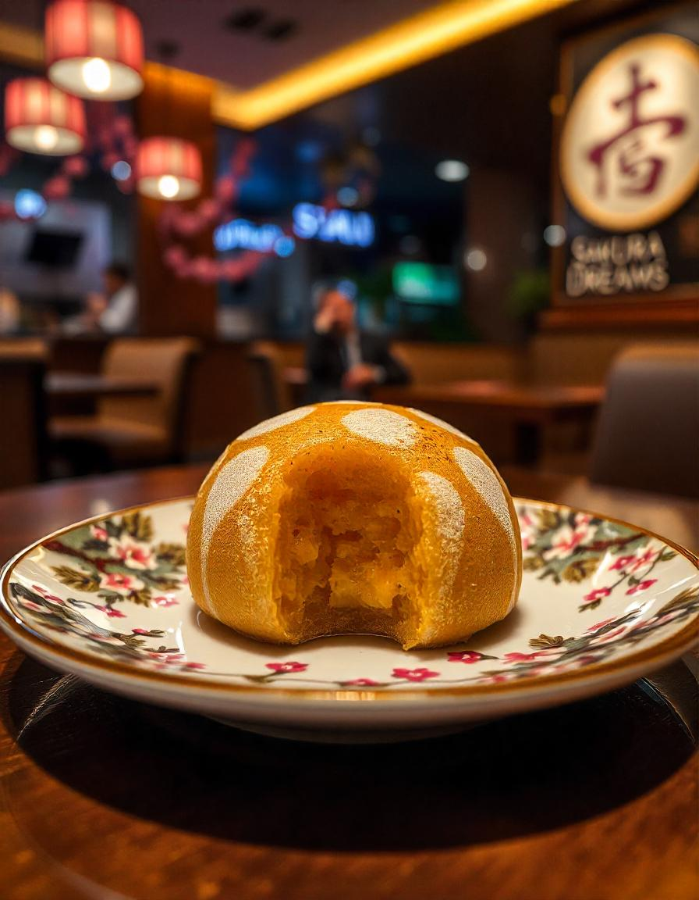
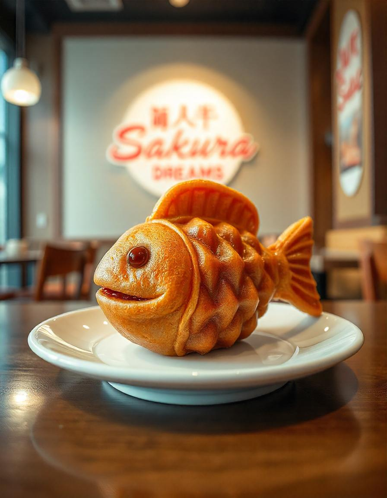
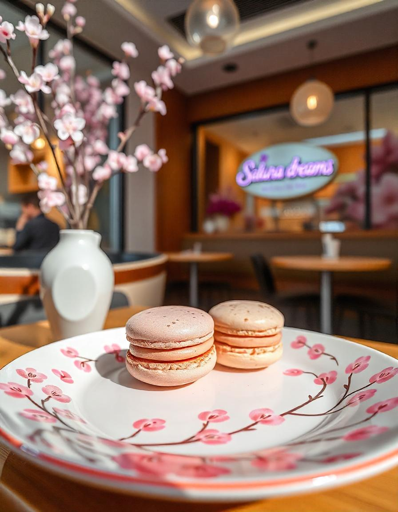

y el relleno cremoso de mascarpone crean una delicia rica y agridulce con un tono verde vibrante.

Dorayaki es un postre japonés clásico que consiste en dos hamburguesas esponjosas parecidas a panqueques intercaladas
con un relleno dulce, más comúnmente pasta de frijoles rojos (anko). Es suave, ligeramente dulce e increíblemente satisfactorio.

Taiyaki es un pastelito con forma de pez con un exterior crujiente y un interior suave parecido a un pastel.
Tradicionalmente se rellena con pasta dulce de frijoles rojos, pero las variaciones modernas incluyen natillas, chocolate o batata.

Los Sakura Macarons son unos delicados macarons con sabor a flor de cerezo y un sabor floral y ligeramente dulce.
Están rellenos de ganache de chocolate blanco y, a menudo, se tiñen de rosa para una hermosa presentación.

Matcha Tiramisu es una versión japonesa del clásico postre italiano. Las capas de bizcochos empapados en matcha
y el relleno cremoso de mascarpone crean una delicia rica y agridulce con un tono verde vibrante.